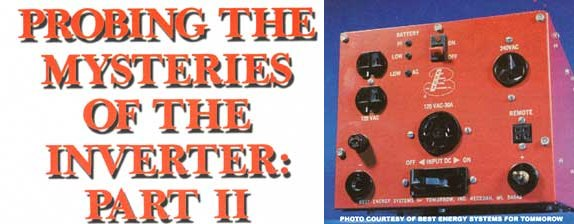
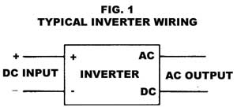
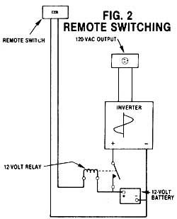
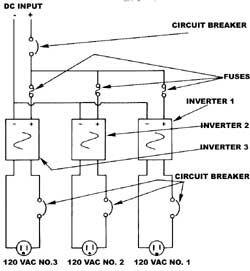
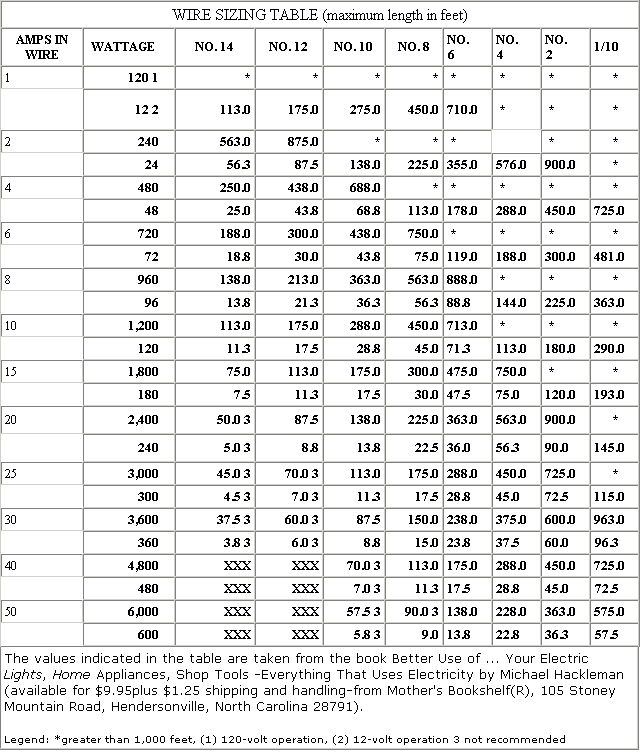

After the lengthy discussion of inverter theory and characteristics in the last issue of MOTHER, you should be well prepared to look into the actual process of fitting an inverter to your power system. So, in this article, we'll explore the factors that make for a proper hookup ... and discuss how to get the job done for the least possible expense.
Though there are six major categories of inverters to choose from-the square wave, modified square wave, stairstep wave, sine wave, motor/generator, and synchronousthe single most important factor determining your choice of a unit will be the amount of power you expect your system to produce. AC power is measured in watts, and the wattage requirements of the appliances you wish to operate must never exceed the output of the inverter.
Let's say, for example, that you plan to light three 100-watt bulbs with your inverter. Since the three fixtures will need 300 watts when burning simultaneously, the inverter must be able to handle at least that much power. In actual practice, however, it's a good idea to consider the worst case situation ... and even to make allowances for the unexpected. A good rule of thumb, then, is to estimate all your needs, and add 10%. Consequently, it'd be a good idea to look for an inverter rated at 330 watts if you plan to operate those three light bulbs. [EDITOR'S NOTE: Inverters with ratings of 350 watts are very common and would work nicely in this application.]
Lest you assume that "more is always better", though, remember (from Part I of this study) that-because of internal losses-the efficiency of an inverter is directly proportional to the ratio of the working output power to the maximum available AC power. And, for that reason, a grossly oversized inverter will be very inefficient.
While we're on the subject of power rating, it should be pointed out that not all inverters are rated in the same way. Some manufacturers take the liberty of including the power factor in their computations, and express the inverter's rating in volt-amps (VA) instead of watts. As you may recall from the previous installment, volt-amps is the product of voltage times current ... which-if the two don't peak at the same time-can be different from watts. We called this disparity the power factor, or the difference between apparent and true power.
Watts is the term used when the power factor is at unity, or equal to one. It therefore follows that one amp at 100 volts is equal to 100 watts. But if the power factor is less than one, the appropriate unit is volt-amps. Consequently, in our example one amp at 100 volts, but with a power factor of 0. 7, gives 100 VA but only 70 watts! That is, only 70% of the available power is actually being used by the load.
The VA ratings of many appliances are included on their labels ... but power factors are seldom listed. And, without such correction figures, you have no way of knowing exactly how much wattage the unit will require. The easiest way through this dilemma would be to take the load rating at face value. In other words, just assume that the VA rating is the same as the wattage rating. (It isn't, of course. The wattage will always be something less than the VA.)
However, when you're considering the voltamp listing on an inverter, you can't simply take it at face value. An inverter rated at 500 VA won't produce 500 watts ... not even close to it. As a rule, though, you can assume that the manufacturer included a power factor of 0.7 in the unit's figures. And using that number, you can see that a 500-VA inverter is good for only 350 watts! But keep in mind that some inverters do have ratings as high as 0.85 .'. . which would provide significantly more "juice" than would be indicated by our guesstimated power factor of 0.7.
And what would happen if we used the "face value" method of matching inverters and loads? Well, there's a good chance that the power factors would be close enough for the arrangement to work, but there's no guarantee. If you have any doubt, always go with a slightly "oversized" inverter.
For systems that require less than 1,000 watts of power, an inexpensive transistorized inverter will probably fill the bill. Furthermore, such units are available at most auto or department stores ... and you should be able to pick up one of about 350-watt capacity for a little more than $100.
Unfortunately, these small inverters have a limited scope of application. For instance, most of them generate a square waveform, which won't be compatible with all your equipment. Square-wave distortion runs counter to the needs of inductive-load mech- anisms, such as refrigerator motors, and will cause the equipment to run hotter than normal ... sometimes with catastrophic results!
The solution is to use a sine wave inverter-or one of the modified square wave types-for those critical loads. Of course, since it takes more circuitry (and therefore expense) to generate a sine wave than to produce a square wave, such inverters are more costly. For that reason, most sine wave inverters are rated at a couple of KW or more ... since the expense of the added circuitry becomes a smaller part of the whole cost in a larger unit.
Another figure to keep in mind when choosing an inverter is surge power capacity. An induction motor, for instance, will draw up to six times its rated power when first started! This overload is generally short lived, and many inverters are designed to cope with it ... but make sure yours will handle the demand before you buy it.
As a final requirement, you'll have to match the inverter's input voltage to your energy system. If your setup is already locked into a format-12 volts, for instance-you'll just have to seek out an inverter that uses 12volt input. If, however, you're still designing your system, it's wise to review the options and decide which one best fulfills your needs.. (Higher voltage inputs, for example, allow higher overall power capacities or longer transmission distances. On the other hand, the odd voltage appliances demanded by such units can be hard to come by.)
And don't forget that an inverter is simply a conversion device ... an AC system of I KW requires DC input power of at least I KW. All too often, users overestimate the capability of their energy production systems and consequently end up with disappointing results.
Wiring an inverter into your home energy setup is a very straightforward task, and you shouldn't have any trouble doing the job yourself. The basic circuit is illustrated in Fig. 1, andas you can see-it involves simply attaching the DC source to the input side and the AC load to the output. There are, however, some precautions to be observed if you're to derive the maximum benefit from the system and insure that it's safe.
In most applications, the input wires from the DC source will carry a comparatively low voltage ... say, somewhere between 12 and 48 volts. So, remembering that volts times amps equals watts, we can see that a 300-watt, 12-volt inverter will be receiving 25 amps at maximum power. Now 25 amps is a pretty hefty chunk of current ... and some cables simply aren't capable of handling that amount. In fact, the smallest-diameter wire you would dare use with that amperage would be No. 10.
Moreover, resistance, in even that 10-gauge wire, will limit the practical lead length to a mere I I feet. Resistance robs the current flow of energy (it is released as heat), and is inversely proportional to the wire size. In other words, the larger the wire, the less resistance there'll be ... hence the loss will also be lower. As a matter of fact, the power loss in a conductor is equal to the square of the current. So if you double the amperage flowing in a wire, the losses will rise fourfold!
The maximum amount of loss that can practically be sustained by a conductor is 5% .. . the figure around which electrical codes are designed. The Wire Sizing Table is designed to show you what the maximum length of a particular size of conductor may be at a given amperage. Under the wattage column, the upper figures express power at 120 volts
and the lower ones at 12 volts. You'll quickly notice that the permissible lengths at 12 volts are one-tenth those possible at 120 ... and that the wattage being delivered is also reduced by the same factor. All told, the losses at 12 volts are 100 times as great as those at 120.
Because the voltage on the input side of the inverter is almost always lower than that on the output, it's important to minimize the losses on the low voltage side by placing the inverter as close to the main power source as possible. And, in practice, the inverter is usually located with the battery bank.
Unfortunately, locating the inverter in the battery compartment presents its own set of problems. When the unit is in use, power is drawn from the source and efficiently transformed into AC. But when the load is removed, the inverter will still demand a certain amount of standby power in order to keep its internal circuits active.
This tare energy (which was discussed at some length in the article in issue 80) slowly sucks power from the storage system without doing any useful work. The obvious answer is to shut down the inverter when it isn't needed ... but when it's located in the battery compartment, this is no simple chore. And, when it has to be done several times per day, the procedure can become pretty frustrating.
It is possible to purchase inverters with built-in load-sensing circuits that will detect an AC load on the output and switch the unit on. This feature is available, though, only on mediumand high-capacity models ... and it's impractical (and inefficient) to use a 2.5-KW inverter when you need, say, only 500 watts.
Another way to approach the problem is to install a remote switch. Some inverters come with remote cutoffs, and Fig. 2 shows how such a device can be wired into a system that's not so equipped. The relay is placed in line with the inverter's input, and the coil can then be switched on or off . The relay's contacts must be capable of handling the full input current value, though, and the coil volt age must match that of the input. Heavy-duty relays of this sort are often used in electric vehicles, and several sources of these com ponents advertise their wares in MOTHER's pages.
Many people who are just starting to develop alternative energy systems begin with small setups and then expand them as more funds become available. Most often, such upgrading involves raising the power output of the original setup ... however, it isn't always easy to make your inverter's capability "grow" with the rest of the system.
To begin with, inverters cannot be connected in parallel to increase their output ... as is often done with DC power sources. Unless the outputs are completely synchronized, one inverter will feed back into the other, thereby destroying one or both. Very few inverters on the market today provide a synchronization signal for parallel operation. (The exception to this rule is the motor/generator inverter, which is self-synchronizing.)
The most obvious way to enlarge a DC-to-AC system is to replace the existing inverter with a larger one. There are two drawbacks to this approach, however. First, you'd have to pay quite a bit for the new, larger inverter. And second, during periods when your overall load is small, the big unit would operate inefficiently.
You can avoid both of these problems when upgrading a system, though, by using several small inverters ... each tackling a specific task. Let's say, for example, that you originally intended your system to power an assortment of hand tools in the workshop. But now you've gotten a freezer that could run off your present inverter but would leave no power for the workshop.
Instead of replacing the present inverter with a larger one, it would be better to add another inverter of the same rating to the system. One would then be used to operate the hand tools and the other could accommodate the freezer. In this way, you'd have power for both uses, at a good overall efficiency, and with a relatively low cash outlay.
Let me emphasize, however, that each inverter must have completely separate AC outlet lines to the particular loads. In no way can the outlets ever be mixed! (The DC inputs,
on the other hand, can be paralleled, as shown in Fig. 3.)
When working with high-voltage AC systems, one becomes acutely aware of the safety hazards involved. All states have established or adopted guidelines for wiring homes and buildings with AC power. And these codes were implemented for only one reason: to insure the well-being of the occupants. So, even though you may not be forced to abide by these regulations in your particular application, keep in mind that they make good sense and bear looking into.
In short, though, never run AC power through wires that were designed to handle only low voltage . . . never overload your circuits (provide a separate line for each large load) ... and always connect the ground returns. In other words, use common sense!
An AC inverter also places large loads on the DC side of the system, since it has the capacity to supply loads which require a great deal of overall wattage. When you're working with the large currents commonly found on the input side of an inverter, for instance, heat buildup problems can arise. Localized resistance, particularly at junction points, can create hot spots ... and therefore fire hazards. What's more, a poor bond between a battery cable and an inverter screw terminal can generate enormous amounts of heat ... not to mention power loss.
This situation can be further aggravated when aluminum wire is used instead of copper. Aluminum is a great deal less expensive than copper and it is readily available ... but-when you use it-it's necessary to compensate for the metal's higher resistance by upgrading your wire size by one.
Furthermore, aluminum is easily oxidized. Its bright luster is soon masked by a thin layer of aluminum "rust" . . . which happens to be a fairly effective insulator. When this film builds up between a connection and a wire, localized heating can be magnified.
However, a special electrical paste has been developed for aluminum wiring. The material contains minute particles of metal dust, which effectively conduct current while shielding the aluminum against oxidation. The paste is also very good at protecting copper, and it must be used wherever the two metals are joined.
Fuses should be placed in every hot line ... on both the AC and DC sides of the inverter. Contrary to popular belief, fuses were never intended to protect you from shock, the appliance from a short circuit, or the inverter from an overload. Rather, in the event of a problem, the fuse blows to prevent a fire from starting ... that is its sole purpose!
Of course, a fuse or circuit breaker on the AC side of the inverter may protect the expensive unit from an overload ... but there's no guarantee. Also, bear in mind that fuses and circuit breakers are not always interchangeable: There are AC and DC circuit breakers, and it's up to you to know which type you're using.
Be absolutely certain, too, that you place the fuse or circuit breaker in the hot line ... never install a fuse or breaker in the ground or return wire! And, for safety's sake, always disconnect the power when you're working on the system. Assume nothing ... turn it off first, and then check with a tester, just to be sure.
We have, over the course of these two articles, covered a lot of -information about inverters ... and by now you should be ready to put one to use safely and efficiently. Buying an inverter does involve a considerable investment. But when properly applied, such a device can allow you all the advantages of a DC alternative power system along with the convenience of AC electricity.
You may remember, from Part I of thisstudy, that there's a class of inverters thatpermit you to connect your homemade powerto the utility lines. Depending on the methodby which they're hooked up, these devices mayallow you to pump excess power into the utility grid (for which you'll be paid) and thenrecei ve electricity from the power company(for which you'll pay) when you run short.The balance between the two directions ofpower flow will mean a less expensive monthly bill ... or, perhaps, no bill at all!Installing a synchronous inverter, however,i . s not nearly as clear-cut as is wiring one ofthe static units discussed in the main article. Because the power company is the sole owner of the utility lines, and you are only given the right to use them, you must abide by utility rules. And the catch is, every such institution's rules are different!
If you're contemplating going on line with a synchronous inverter, you must first contact your utility and approach the appropriate individuals with your proposal. I think you'll find that they'll be very cooperative (for the present, at least, they're required by law to make some sort of deal with you) and that you'll be able to work out an arrangement that'll fulfill your needs as well as theirs.
|
 |
 |
 |
|
 |
 |
|